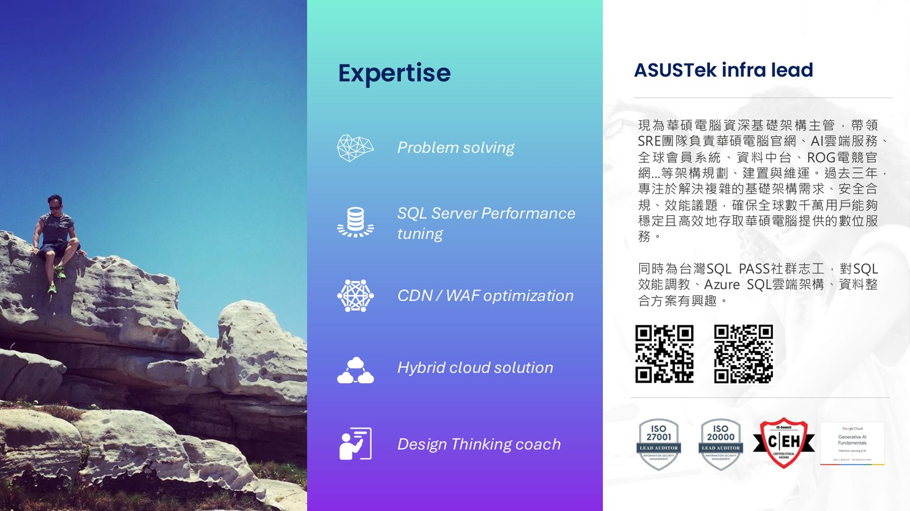
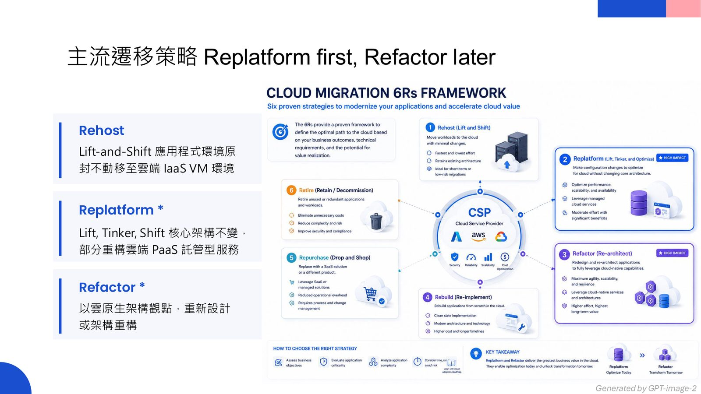
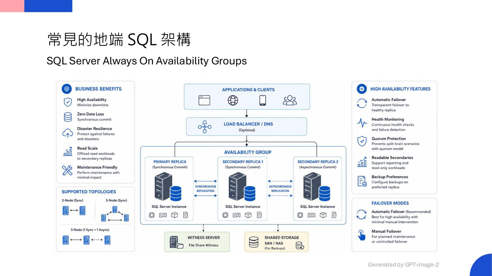
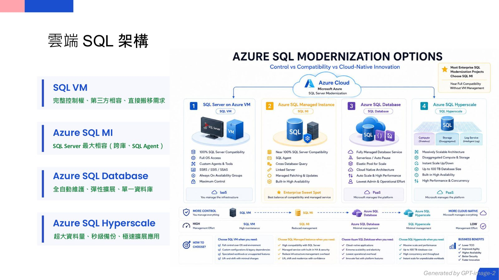

摘要
本演講探討超大型關聯式資料庫（VLDB）在雲端遷移與自治管理上的關鍵架構決策與 FinOps 優化思維。華碩電腦基礎架構主管 Jerry Hsu 分享如何利用 Azure Managed Instance Link（基於底層 Distributed AG 交易記錄同步）實現近乎零停機的 PaaS 遷移，並說明 SQL Server 2022/2025 可支援雙向來回切換驗證。針對資料庫雲端化最常遭遇的資源過度配置（Overprovisioning）痛點，演講提出「Tune-Rightsize-Reserve」（先調校、再評估規格、最後綁約）的黃金減法路徑，實證如何透過讀寫分離與 SARGable 語法優化，將 SQL 資源從 32 vCore 降至 16 vCore，並疊加 3 年期預留容量與 Azure Hybrid Benefit 折扣。最後，剖析了雲端自動調校（如 FORCE_LAST_GOOD_PLAN）的風險與限制，重塑次世代 DBA 效能轉成本的價值核心。
重點整理
- 三種主流雲遷移策略：Rehost（原封不動搬遷）、Replatform（部分重構）、Refactor（雲原生重新設計），主流做法是 Replatform first, Refactor later
- 地端常見架構（Always On AG、Failover Cluster、Log Shipping）對應雲端 SQL VM、Azure SQL MI、Azure SQL Database、Hyperscale 等選項
- Managed Instance Link 透過底層 Distributed Availability Groups 持續同步交易記錄，可達近乎零停機的線上遷移，並於同步期間提供唯讀資料庫供驗證
- 案例顯示：先調校將 CPU 使用率從 48% 降到 15%，SQL MI 規格從 32 vCore 降為 16 vCore，再簽 3 年 RI，總成本較「直接對原規格簽約」再省約每月 1,970 美元
- 關鍵結論：RI 只能讓你「便宜地浪費」，唯有效能調校（Tuning）才能讓你「不再浪費」，這是 FinOps 最容易被低估的成本槓桿
重點圖片／架構圖




大型資料庫雲遷移的架構決策
講者引用 Gartner 預測「90% 組織將在 2027 年前採用混合雲」為背景，說明企業遷移雲端主要有三種策略：Rehost（Lift-and-Shift，應用程式環境原封不動移至 IaaS VM）、Replatform（Lift, Tinker, Shift，核心架構不變但部分重構為 PaaS 服務）、Refactor（以雲原生觀點重新設計架構），業界主流做法是先 Replatform 再視需求 Refactor。關聯式資料庫通常是雲端支出大宗，涉及授權費用、vCore/vRAM、Premium SSD IOPS 與 HADR/多副本成本，因此資料庫遷移策略的選擇格外重要。
從地端到雲端的 SQL 架構對應
地端常見的 SQL Server 架構包括 Always On Availability Groups、Failover Cluster 與 Log Shipping，對應到雲端則有四種選項：SQL VM（完整控制權、第三方相容、適合直接搬移）、Azure SQL MI（SQL Server 最大相容，支援跨庫與 SQL Agent）、Azure SQL Database（全自動維護、彈性擴展、單一資料庫）、以及 Azure SQL Hyperscale（適合超大資料量、秒級備份與極速擴展）。講者強調「遷移的重點不在遷去哪裡，而在如何遷移」——需要完整、快速、無縫且具備回滾能力。
近乎零停機的遷移方案：Managed Instance Link
演講詳細介紹多種遷移路徑，包括即時或短停機的 Distributed AG、Managed Instance Link、Azure DMS Online 模式與 Transactional Replication，以及離線批次的 Native Backup to URL、Azure DMS Offline、Log Replay Service 與 BACPAC。其中 Managed Instance Link 底層採用 SQL Server Always On 分散式可用性群組，持續將交易記錄同步到 SQL Managed Instance，同步期間 MI 資料庫維持唯讀狀態可供驗證測試，切換僅需透過 Failover 完成，是停機時間最短的線上遷移路徑。此方案支援 SQL Server 2016 至 2025，其中 2022/2025 版本支援雙向遷移（可來回切換），但需注意一個 Link 僅同步單一資料庫，且不會搬移 instance 層級物件（如登入、SQL Agent Job）。
雲端資料庫的過度配置與 FinOps 挑戰
報告指出近 32% 雲端預算因過度配置（Overprovisioning）而浪費，根源在於 DBA 的 KPI 是「不能慢、不能掛」而非成本責任，導致地端規格思維被直接 1:1 搬上雲、以尖峰用量做冗餘規劃、資源耦合與缺乏彈性等問題。講者提出兩種成本槓桿：財務槓桿（RI／Reserved Capacity／Hybrid Benefit，在既有規格上打折但用量不變）與效能槓桿（透過索引、查詢優化、減少 I/O 直接降低 CPU/記憶體需求，從底層降低 SKU 成本），並強調效能調校是容易被低估、卻最根本的成本槓桿。
案例實證：先調校再簽約的成本效益
講者分享實際案例：資料庫平均 CPU 使用率從 48% 調校降至 15% 後，SQL MI 規格得以從 32 vCore 降為 16 vCore（每月成本從約 5,900 美元降至約 2,950 美元，降幅 50%），再對 16 vCore 簽署 3 年 RI（每月約 1,970 美元，再降 33%）。相較之下，若跳過調校直接對原本 32 vCore 簽 3 年 RI，每月仍需約 3,940 美元，顯示「先調校」這一步就能再省約每月 1,970 美元，且這是 RI 折扣永遠省不到的部分。演講也介紹 Automatic Tuning 功能（FORCE_LAST_GOOD_PLAN、CREATE INDEX、DROP INDEX）及其限制與風險，指出核心調校仍需仰賴 DBA 判斷。最終結論是 Tune → Right-size → Reserve 的順序策略：先優化效能降低資源基線，再合理評估規格，最後才鎖定長期折扣，讓每一分雲端支出發揮最大價值。